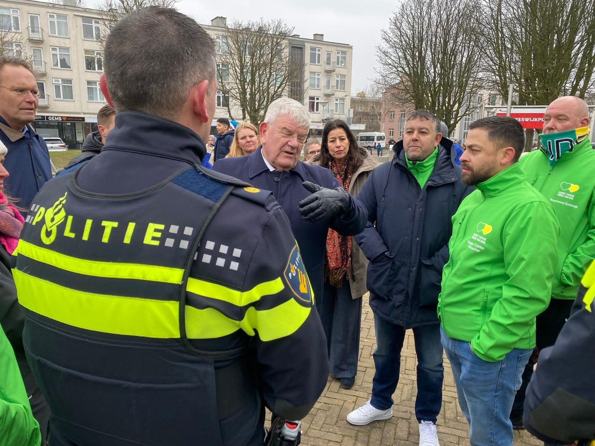
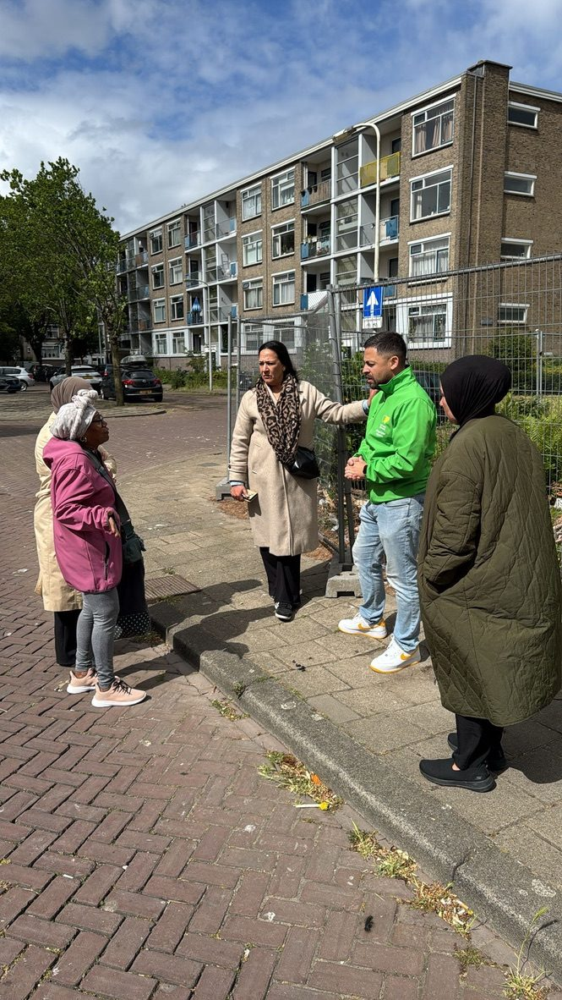
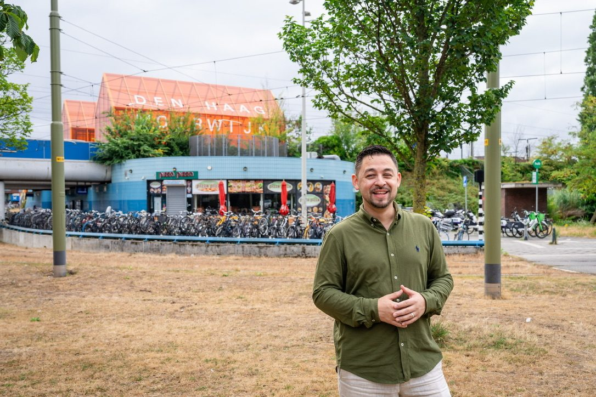
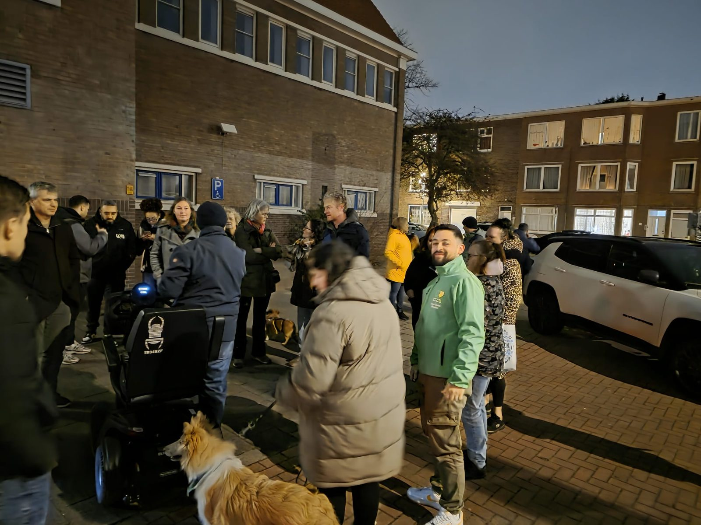
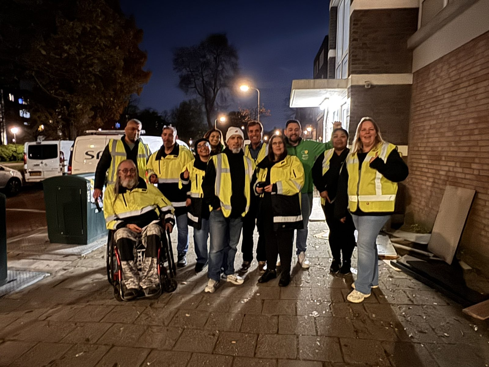
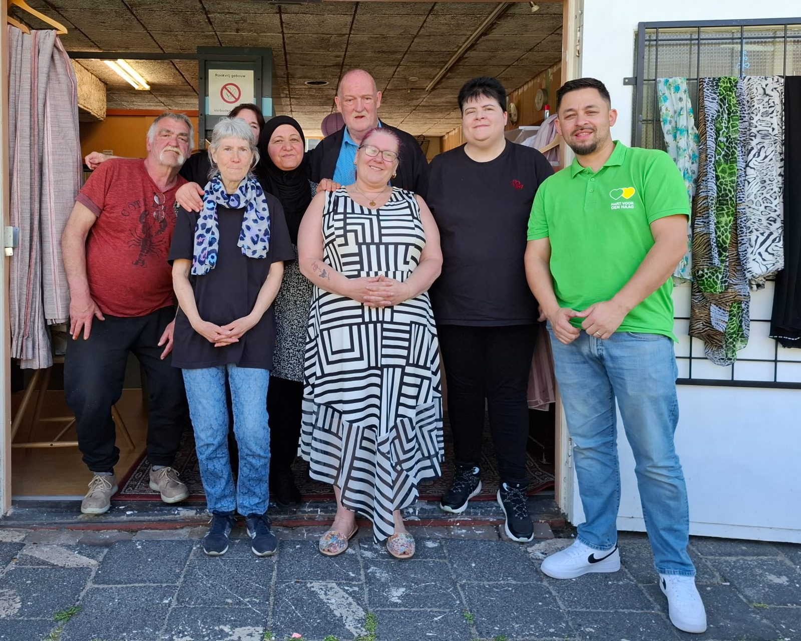
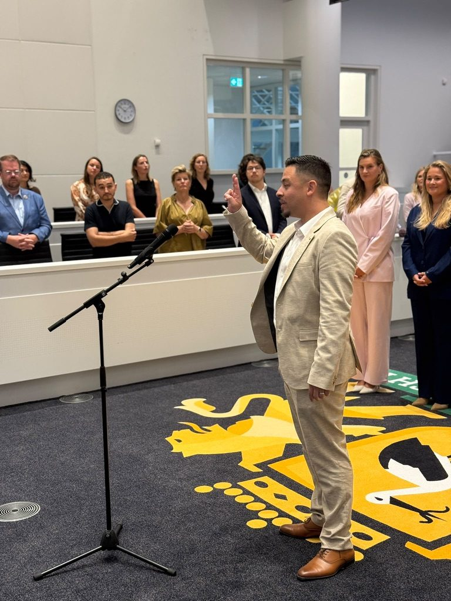
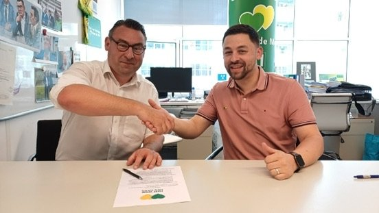

Ik ben Diego Canter Visscher, gemeenteraadslid voor Hart voor Den Haag. Al bijna twintig jaar woon ik in Moerwijk. Ik weet wat er in onze wijken speelt, omdat ik er zelf elke dag doorheen loop.
Mijn lijn is simpel: de gemeente moet haar basistaken goed doen. Schone straten, veilige buurten, meldingen die serieus worden opgepakt en een overheid die resultaat laat zien in plaats van beloftes.
Drie onderwerpen die elke Hagenaar direct raakt. Geen beleidsnota's, maar zichtbare verbetering op straat.
Stadsbreed
Afval & Schoon
Een schone straat is het visitekaartje van de stad. Geen vuilnis naast de ORAC, geen bijplaatsingen die blijven liggen.
Handhaven op de plekken met de meeste meldingen
Camera's bij ORAC-hotspots
's Nachts schoonmaken, 's ochtends een schone straat
Stadsbreed
Wijkaanpak
Elke wijk een eigen plan: de wijkagenda. Bewoners, ondernemers en gemeente bepalen samen wat prioriteit krijgt en voeren het samen uit.
Wijkagenda's als echte zeggenschap: bewoners beslissen mee over prioriteiten én over het geld
Sterke bewonersorganisaties en buurthuizen als basis van de wijk
Extra inzet in kwetsbare wijken, met heldere doelen en een wijkconciërge als vast aanspreekpunt
Stadsbreed
Integratie
Meedoen is de norm. Duidelijke verwachtingen, wederkerigheid en kansen voor wie meedoet.
Nederlands leren als uitgangspunt, laagdrempelig in de wijk
Inburgering gericht op werk en deelname
Problemen benoemen, oplossingen in de buurt
Stadsdeel Escamp · Den Haag Zuidwest
Zuidwest: mijn thuis en mijn prioriteit
Zuidwest verdient een ontwikkeling die verder gaat dan alleen woningbouw. Hart voor Den Haag maakt zwakke wijken sterker in plaats van sterke wijken zwakker. Dat is de lijn uit ons programma en uit het coalitieakkoord, en dat is waar ik elke dag mee bezig ben.
🛡️ Veiligheid voorop
80 extra boa's en meer cameratoezicht, een harde aanpak van explosies en straatgeweld, en de wijkagent terug in de wijk met vaste spreekuren. Extra geld voor "Veilig over Straat" in Moerwijk, te beginnen op het Heeswijkplein.
💪 Sterke schouders in de wijk
Meer bewoners met werk en inkomen. Nieuwe woningen in Zuidwest buiten het sociale segment, zodat wijken gemengd worden en segregatie wordt tegengegaan. Minder concentratie van kwetsbare groepen in de wijken die nu al het meeste dragen.
🏪 Voorzieningen die blijven
Het Nationaal Programma Zuidwest gaat door, samen met het Rijk. Extra geld voor buurthuizen, de Leyweg als winkelhart van Zuidwest en de ontwikkeling van knooppunt Moerwijk.
🗣️ Bewoners aan zet
Recht op terugkeer bij sloop en nieuwbouw, ruimte voor je auto, en wijkagenda's waarin bewoners zelf meebeslissen over wat prioriteit krijgt in hun buurt.
Mijn raadswerk
Wat ik concreet doe in de raad
Schriftelijke vragen, moties en debatten. Zo zie je waar ik mee bezig ben en wat het oplevert.
Motie: camera's bij ORAC-hotspotsInzet van het budget Leefbare Wijken voor camera's op de ondergrondse containers met de meeste meldingen. Begrotingsraad november 2026.
In behandeling
Schriftelijke vragen: afvaldumping en wildkampeerders BinckhorstNa onze vragen heeft de gemeente gehandhaafd: twaalf voertuigen van wildkampeerders zijn weggehaald, er staan betonblokken en het terrein is schoongemaakt. Lees het bericht →
Resultaat
Schriftelijke vragen: kringloopwinkel Jan LuykenlaanOpheldering gevraagd over de sluiting van de kringloopwinkel in Moerwijk en een vervangende plek voor de buurt.
Beantwoord
Afvaldebat: Aanvalsplan AfvalInbreng in de commissie Leefomgeving met voorstellen voor handhaving, duidelijke bebording bij ORAC's en communicatie met pictogrammen.
Wat een wethouder in de commissie of raad toezegt, houd ik hier bij. Afspraak is afspraak.
Voorbeeld: onderzoek naar nachtelijk schoonmaken op hotspotsWethouder Broeders · commissie Leefomgeving · 10 september 2026Toegezegd: de mogelijkheden van stil, elektrisch materieel in de nacht meenemen in het Aanvalsplan Afval. Terugkoppeling verwacht: Q1 2027.
Open
Voorbeeld: duidelijke bebording bij ORAC'sWethouder Broeders · commissie Leefomgeving · 10 september 2026Toegezegd: pictogrammen en meertalige bebording bij ondergrondse containers op de locaties met de meeste bijplaatsingen.
Nagekomen

📍 Met de burgemeester en de wijkagent op het Heeswijkplein, Moerwijk
💡 Constructief waar het kan, kritisch waar het moet.
Hart voor Den Haag zit in het college. Ik wil dat onze plannen slagen. Maar als uitvoering achterblijft, zeg ik dat. Bewoners moeten merken dat het beter wordt.
🏛️ Commissies
Leefomgeving (afval, buitenruimte) en Samenleving (integratie, inburgering). Tweede woordvoerder voor buitenruimte en burgerschap.
📍 Stadsdeel Escamp
Moerwijk, Bouwlust-Vrederust en het Zuiderpark; voor Morgenstond werk ik samen met collega Necati Akbas. Jarenlang stadsdeelvoorzitter voor Hart voor Den Haag, nu jullie stem in de raad.


Stadsdeel Escamp & Zuidwest
Mijn Zuidwest
Zuidwest verdient een raadslid dat pal voor de wijken staat. Niet vanaf het stadhuis, maar vanuit de straat. Dit speelt er en dit doe ik eraan.
MoerwijkVerlichting op het Heeswijkplein, de kringloopwinkel aan de Jan Luykenlaan, afval rond de ORAC's en de concentratie van kwetsbare groepen. Mijn eigen wijk, al twintig jaar. Elke eerste woensdag spreekuur in de Buurttuin Moerwijk-Oost.
Bouwlust & VrederustBijplaatsingen en zwerfafval, veiligheid rond de Lozerlaan en de Uithof. Hier houd ik elke eerste maandag mijn spreekuur.
MorgenstondVoor Morgenstond is mijn collega Necati Akbas het aanspreekpunt namens Hart voor Den Haag. Woon je daar en heb je een vraag? Stuur mij gerust een bericht, dan geef ik het aan hem door.
ZuiderparkHet groene hart van Zuidwest schoon en veilig houden, met slim toezicht.

Avondschouw met bewoners: waar is het donker, waar voelt het onveilig?

Samen de wijk schoon: met vrijwilligers de straat op.

Buurtvoorzieningen zijn het hart van de wijk. Die moeten blijven.
Meld het bij Diego
Vuil op straat? Kapotte lantaarn? Zo pak je het aan
Een melding bij de gemeente is officieel en wordt geregistreerd. Blijft het liggen, dan ga ik erachteraan.
1
Meld het bij de gemeente
Via 14070, de website van de gemeente Den Haag of de meldingen-app. Je krijgt een meldingsnummer. Bewaar dat.
2
Blijft het liggen? Stuur het door
Geen reactie of niet opgelost? Stuur mij het meldingsnummer, de locatie en een foto via het contactformulier of WhatsApp.
3
Ik volg het op
Ik leg het neer bij de juiste ambtenaar of wethouder en koppel aan jou terug wat er gebeurt. Zien we een patroon, dan wordt het een raadsvraag.
Kies zelf een moment dat jou uitkomt. Of kom langs op het spreekuur in de wijk, zonder afspraak.
Wijkspreekuur Bouwlust-VrederustElke eerste maandag van de maand, 10:00–11:30 Koffieruimte Lozer-Inn, vierkantflat aan de Lozerlaan (bij de Uithof)
Wijkspreekuur Moerwijk-OostElke eerste woensdag van de maand Buurttuin Moerwijk-Oost. Loop gewoon binnen, geen afspraak nodig.
Vrijdag: wijkbezoekenElke vrijdag ben ik in de wijken van Zuidwest. Wil je dat ik langskom bij jou in de straat of bij je vereniging? Plan hiernaast een afspraak.
Gesprek op afspraak30 minuten, op het stadhuis, in de wijk of via video. Ook voor ondernemers, verenigingen en bewonersorganisaties.
Liever direct contact?Gebruik het contactformulier onderaan deze pagina. Ik reageer binnen enkele dagen, ook in het weekend.
Afspraak inplannen
Hier verschijnt je online agenda. Bezoekers kiezen een datum en tijd en krijgen automatisch een bevestiging; de afspraak komt direct in jouw agenda.
Persberichten, artikelen en acties vanuit de raad en de wijk.
Hart voor Den Haag📅 30 oktober 2026
Wildkampeerders en afval verdwijnen van de Binckhorst
Na schriftelijke vragen van Hart voor Den Haag heeft de gemeente ingegrepen op het bedrijventerrein: twaalf voertuigen weggehaald, betonblokken geplaatst en het terrein schoongemaakt. Zo hoort het: melden, aandringen, resultaat.
Hart voor Den Haag wil duidelijkheid over kringloopwinkel in Moerwijk
Na de sluiting van weggeefwinkel De Loev moet ook de kringloopwinkel aan de Jan Luykenlaan de ruimte van Haag Wonen verlaten. Hart voor Den Haag vraagt het college om opheldering en een vervangende plek voor de buurt.
De gemeenteraad bepaalt de hoofdlijnen van het beleid, stelt de begroting vast en controleert het college van burgemeester en wethouders. Als raadslid stel ik vragen, dien ik moties en voorstellen in en zorg ik dat de problemen uit de wijk op de agenda van het stadhuis komen.
Kun je mijn melding over vuil of een kapotte lantaarn oplossen?
Niet zelf, daar is de gemeente voor. Meld het eerst via 14070 of de meldingen-app. Blijft het liggen, stuur mij dan het meldingsnummer. Ik kaart het aan bij de juiste ambtenaar of wethouder en koppel aan jou terug.
Hoe werkt een schriftelijke vraag (raadsvraag)?
Een raadslid kan het college schriftelijk vragen stellen over elk onderwerp in de stad. Het college moet binnen zes weken antwoorden. Zo dwing ik duidelijkheid af over bijvoorbeeld de kringloopwinkel in Moerwijk of de overlast op de Binckhorst. Heb je een onderwerp dat volgens jou een raadsvraag verdient? Laat het me weten.
Ik ben ondernemer of heb een vereniging. Kan ik je spreken?
Zeker. Plan een afspraak via de agenda op deze pagina of kom langs op het spreekuur. Ik kom ook graag bij jullie langs, vooral op vrijdag tijdens mijn wijkbezoeken.
Spreek je ook Spaans of Papiaments?
Sí / Sí, claro. Ik spreek Nederlands, Spaans, Papiamentu en Engels. Een gesprek kan in die talen. Op de gemeente en in de wijk blijft Nederlands de norm, en daar help ik graag bij.

Wie ben ik
Van de straat naar de raad
Ik ben geboren in Nederland, met een Guatemalaanse moeder en een Indonesische vader uit Bandung. Al bijna twintig jaar woon ik met mijn gezin in Moerwijk. In de wijk noemen ze me "Mr. Zuidwest" en dat draag ik met trots.
Sinds 2004 werk ik bij NS Stations op Rotterdam Centraal, waar ik ook lid ben van de ondernemingsraad. Ik weet dus hoe het is om elke dag vroeg op te staan, de tram te pakken en te werken voor je geld. Dat is de blik waarmee ik naar het stadhuis kijk.
Jarenlang was ik stadsdeelvoorzitter van Escamp voor Hart voor Den Haag en actief in de bewonersorganisatie van Moerwijk. Sinds juli 2026 zit ik in de gemeenteraad. Ik ben geen beroepspoliticus. Ik ben een bewoner die zijn mouwen opstroopt.
Woont inMoerwijk, Den Haag Zuidwest
WerkNS Stations, Rotterdam Centraal (sinds 2004)
TalenNederlands, Spaans, Papiamentu, Engels
PartijHart voor Den Haag

Hoe het begon. De handtekening als stadsdeelvoorzitter van Escamp, samen met Richard de Mos. Vanaf dat moment: de wijk in, luisteren en aanpakken.
Contact
Mijn deur staat open
Een vraag, een probleem in je buurt of een goed idee? Laat het me weten. Ik reageer persoonlijk.